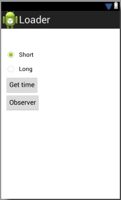

В этом уроке:
- изучаем Loader и AsyncTaskLoader
Лоадеры появились в третьей версии Android. Предназначены для выполнения асинхронных операций и привязаны к некоторым lifecycle-методам Activity или Fragment-ов.
Я когда-то пытался уже эту тему осилить, но с ходу не получилось: не особо понял смысл и механизмы. Но создатели Android не дремлют. Они некоторые методы по работе с БД объявили устаревшими и очень рекомендуют использовать CursorLoader. Из-за этого мне теперь надо Урок 52 переделывать. И я решил, что сначала имеет смысл все-таки разобраться и осветить тему Loader-ов, а потом уже обновлю Урок 52.
Итак, имеем два класса.
LoaderManager – встроен в Activity и Fragment. Как и следует из названия он управляет объектами Loader. Он их создает, хранит, уничтожает и стартует/останавливает. Для взаимодействия с ним используется колбэк интерфейс LoaderCallbacks.
Loader – объект, который должен уметь асинхронно выполнять какую-либо задачу.
Напишем приложение, в котором используем лоадер, и посмотрим его поведение на примерах. Лоадер будет просто определять текущее время, но делать это он будет асинхронно и с учетом формата.
Создадим проект:
Project name: P1351_Loader
Build Target: Android 4.0
Application name: Loader
Package name: ru.startandroid.develop.p1351loader
Create Activity: MainActivity
В strings.xml добавим строки:
<string name="format_short">Short</string>
<string name="format_long">Long</string>
<string name="get_time">Get time</string>
<string name="observer">Observer</string>Экран main.xml:
<?xml version="1.0" encoding="utf-8"?>
<RelativeLayout
xmlns:android="http://schemas.android.com/apk/res/android"
xmlns:tools="http://schemas.android.com/tools"
android:layout_width="match_parent"
android:layout_height="match_parent"
android:layout_margin="10dp">
<TextView
android:id="@+id/tvTime"
android:layout_width="wrap_content"
android:layout_height="wrap_content"
android:layout_margin="10dp"
android:textAppearance="?android:attr/textAppearanceMedium">
</TextView>
<RadioGroup
android:id="@+id/rgTimeFormat"
android:layout_width="wrap_content"
android:layout_height="wrap_content"
android:layout_below="@id/tvTime">
<RadioButton
android:id="@+id/rdShort"
android:layout_width="wrap_content"
android:layout_height="wrap_content"
android:checked="true"
android:text="@string/format_short">
</RadioButton>
<RadioButton
android:id="@+id/rdLong"
android:layout_width="wrap_content"
android:layout_height="wrap_content"
android:text="@string/format_long">
</RadioButton>
</RadioGroup>
<Button
android:id="@+id/btnGetTime"
android:layout_width="wrap_content"
android:layout_height="wrap_content"
android:layout_below="@id/rgTimeFormat"
android:onClick="getTimeClick"
android:text="@string/get_time">
</Button>
<Button
android:id="@+id/btnObserver"
android:layout_width="wrap_content"
android:layout_height="wrap_content"
android:layout_below="@+id/btnGetTime"
android:onClick="observerClick"
android:text="@string/observer">
</Button>
</RelativeLayout>Текст для отображения времени, выбор формата: короткий и длинный, кнопка получения времени и кнопка для работы с Observer-ом, который мы попробуем прикрутить к лоадеру.

Создадим класс лоадера. Причем, не в MainActivity, а отдельно, чтобы было нагляднее. Вообще, можно и в MainActivity создавать, но при этом есть ограничение: он должен быть static. Иначе LoaderManager ругнется: "Object returned from onCreateLoader must not be a non-static inner member class".
TimeLoader.java:
package ru.startandroid.develop.p1351loader;
import java.text.SimpleDateFormat;
import java.util.Date;
import java.util.Locale;
import java.util.concurrent.TimeUnit;
import android.content.Context;
import android.content.Loader;
import android.os.AsyncTask;
import android.os.Bundle;
import android.text.TextUtils;
import android.util.Log;
public class TimeLoader extends Loader<String> {
final String LOG_TAG = "myLogs";
final int PAUSE = 10;
public final static String ARGS_TIME_FORMAT = "time_format";
public final static String TIME_FORMAT_SHORT = "h:mm:ss a";
public final static String TIME_FORMAT_LONG = "yyyy.MM.dd G 'at' HH:mm:ss";
GetTimeTask getTimeTask;
String format;
public TimeLoader(Context context, Bundle args) {
super(context);
Log.d(LOG_TAG, hashCode() + " create TimeLoader");
if (args != null)
format = args.getString(ARGS_TIME_FORMAT);
if (TextUtils.isEmpty(format))
format = TIME_FORMAT_SHORT;
}
@Override
protected void onStartLoading() {
super.onStartLoading();
Log.d(LOG_TAG, hashCode() + " onStartLoading");
}
@Override
protected void onStopLoading() {
super.onStopLoading();
Log.d(LOG_TAG, hashCode() + " onStopLoading");
}
@Override
protected void onForceLoad() {
super.onForceLoad();
Log.d(LOG_TAG, hashCode() + " onForceLoad");
if (getTimeTask != null)
getTimeTask.cancel(true);
getTimeTask = new GetTimeTask();
getTimeTask.executeOnExecutor(AsyncTask.THREAD_POOL_EXECUTOR, format);
}
@Override
protected void onAbandon() {
super.onAbandon();
Log.d(LOG_TAG, hashCode() + " onAbandon");
}
@Override
protected void onReset() {
super.onReset();
Log.d(LOG_TAG, hashCode() + " onReset");
}
void getResultFromTask(String result) {
deliverResult(result);
}
class GetTimeTask extends AsyncTask<String, Void, String> {
@Override
protected String doInBackground(String... params) {
Log.d(LOG_TAG, TimeLoader.this.hashCode() + " doInBackground");
try {
TimeUnit.SECONDS.sleep(PAUSE);
} catch (InterruptedException e) {
return null;
}
SimpleDateFormat sdf = new SimpleDateFormat(params[0],
Locale.getDefault());
return sdf.format(new Date());
}
@Override
protected void onPostExecute(String result) {
super.onPostExecute(result);
Log.d(LOG_TAG, TimeLoader.this.hashCode() + " onPostExecute "
+ result);
getResultFromTask(result);
}
}
}Лоадер будет асинхронно получать время. При этом будем эмулировать паузой долгое выполнение, как будто он на какой-нить сервер ходит и оттуда данные получает. Я поставил паузу в 10 сек, но можно поставить и меньше, чтобы не ждать долго выполнение примеров. Выводить время он будет уметь в двух форматах – коротком и длинном, это соответственно константы TIME_FORMAT_SHORT и TIME_FORMAT_LONG.
Наш класс расширяет класс Loader. Loader является параметризированным классом, поэтому нам в скобках <> необходимо указать класс-тип, который указывает, что будет возвращать лоадер после своей работы. Наш лоадер будет возвращать строку с временем, поэтому я указываю здесь String.
В конструкторе читаем из Bundle данные о формате времени. Если ничего не пришло, то будем использовать короткий формат.
Далее идут 5 стандартных методов лоадера.
onStartLoading – вызывается при старте (onStart) Activity или фрагмента, к которому будет привязан Loader.
onStopLoading – вызывается при остановке (onStop) Activity или фрагмента, к которому будет привязан Loader.
Сразу надо определиться с формулировкой состояний. Будем считать что лоадер перешел в состояние «стартован» после метода onStartLoading и в состояние «остановлен» после метода onStopLoading. Это необходимо, т.к. поведение лоадера зависит от состояния и нам в дальнейшем нужно будет эти состояния как-то словесно идентифицировать.
Надо понимать, что два этих метода автоматически не означают, что лоадер начал или закончил работу. Это просто переход в состояние стартован и остановлен. А будет он в это время работать или нет, определять вам.
onForceLoad - в этом методе кодим работу лоадера. Запускаем здесь GetTimeTask, который будет нам время получать асинхронно. Ниже разберем подробно, что он делает.
onAbandon – метод означающий, что лоадер становится неактивным. Далее на примере будет видно, что это означает.
onReset – означает уничтожение лоадера, вызывается при закрытии (onDestroy) Activity или фрагмента, к которому будет привязан Loader. Не вызывается, если onDestroy был вызван, например при смене ориентации.
Далее рассмотрим примеры и увидим, когда и какие методы вызываются.
Метод getResultFromTask – это наш метод. GetTimeTask, по окончании своей работы, вызовет этот метод и передаст нам результаты своей работы. А мы уже вызываем в нем стандартный метод лоадера – deliverResult, который оповещает слушателя, подключенного к лоадеру, что работа окончена и передает ему данные.
GetTimeTask – это AsyncTask, который берет на вход формат даты и через определенную паузу возвращает (с помощью getResultFromTask) в лоадер текущее время в этом формате.
MainActivity.java:
package ru.startandroid.develop.p1351loader;
import android.app.Activity;
import android.app.LoaderManager.LoaderCallbacks;
import android.content.Loader;
import android.os.Bundle;
import android.util.Log;
import android.view.View;
import android.widget.RadioGroup;
import android.widget.TextView;
public class MainActivity extends Activity implements LoaderCallbacks<String> {
final String LOG_TAG = "myLogs";
static final int LOADER_TIME_ID = 1;
TextView tvTime;
RadioGroup rgTimeFormat;
static int lastCheckedId = 0;
@Override
protected void onCreate(Bundle savedInstanceState) {
super.onCreate(savedInstanceState);
setContentView(R.layout.main);
tvTime = (TextView) findViewById(R.id.tvTime);
rgTimeFormat = (RadioGroup) findViewById(R.id.rgTimeFormat);
Bundle bndl = new Bundle();
bndl.putString(TimeLoader.ARGS_TIME_FORMAT, getTimeFormat());
getLoaderManager().initLoader(LOADER_TIME_ID, bndl, this);
lastCheckedId = rgTimeFormat.getCheckedRadioButtonId();
}
@Override
public Loader<String> onCreateLoader(int id, Bundle args) {
Loader<String> loader = null;
if (id == LOADER_TIME_ID) {
loader = new TimeLoader(this, args);
Log.d(LOG_TAG, "onCreateLoader: " + loader.hashCode());
}
return loader;
}
@Override
public void onLoadFinished(Loader<String> loader, String result) {
Log.d(LOG_TAG, "onLoadFinished for loader " + loader.hashCode()
+ ", result = " + result);
tvTime.setText(result);
}
@Override
public void onLoaderReset(Loader<String> loader) {
Log.d(LOG_TAG, "onLoaderReset for loader " + loader.hashCode());
}
public void getTimeClick(View v) {
Loader<String> loader;
int id = rgTimeFormat.getCheckedRadioButtonId();
if (id == lastCheckedId) {
loader = getLoaderManager().getLoader(LOADER_TIME_ID);
} else {
Bundle bndl = new Bundle();
bndl.putString(TimeLoader.ARGS_TIME_FORMAT, getTimeFormat());
loader = getLoaderManager().restartLoader(LOADER_TIME_ID, bndl,
this);
lastCheckedId = id;
}
loader.forceLoad();
}
String getTimeFormat() {
String result = TimeLoader.TIME_FORMAT_SHORT;
switch (rgTimeFormat.getCheckedRadioButtonId()) {
case R.id.rdShort:
result = TimeLoader.TIME_FORMAT_SHORT;
break;
case R.id.rdLong:
result = TimeLoader.TIME_FORMAT_LONG;
break;
}
return result;
}
public void observerClick(View v) {
}
}В onCreate мы получаем объект LoaderManager с помощью метода getLoaderManager и вызываем его метод initLoader, который создаст и вернет нам Loader. В качестве параметров метода initLoader указываем:
- ID лоадера, это необходимо, т.к. мы запросто можем использовать сразу несколько разных лоадеров, и LoaderManager да и мы сами должны их как-то различать
- объект Bunlde. В него вы помещаете данные, которые хотите использовать при создании лоадера
- объект, реализующий колбэк-интерфейс LoaderCallbacks. Он будет использоваться для взаимодействия с лоадером.
Итак, посмотрим, что мы передали в initLoader. В качестве ID используем константу LOADER_TIME_ID. В Bundle помещаем формат времени, который хотим получить. Для определения формата используем свой метод getTimeFormat(), его обсудим ниже. И третьим параметром метода идет MainActivity, которое реализует интерфейс LoaderCallbacks. На всякий случай поясню, что можно было и создать отдельный объект для этого колбэка, а не использовать Activity. Кому как удобнее.
Метод initLoader возвращает созданный лоадер, но я его никуда не сохраняю, т.к. мне это здесь не нужно.
Интерфейс LoaderCallbacks требует реализации трех методов:
onCreateLoader – вызывается, когда требуется создать новый лоадер, например, в тот момент, когда мы выше вызываем метод initLoader. На вход получает ID требуемого лоадера и Bundle с данными. Т.е. те самые объекты, что мы передавали в initLoader.
onLoadFinished – срабатывает, когда лоадер закончил работу и вернул результат. На вход приходит сам лоадер и результат его работы.
onLoaderReset – срабатывает, когда LoaderManager собрался уничтожать лоадер. На вход получает лоадер.
Далее на примерах увидим порядок вызовов этих трех методов.
Метод getTimeClick – обработчик кнопки Get time. В нем мы определяем: в каком формате требуется получить время. Далее проверяем, если последний созданный лоадер был создан с учетом этого же формата, то просто получаем лоадер методом getLoader по ID. Если же формат другой, то нам нужен новый лоадер. Для этого используется метод restartLoader. Он принимает на вход те же параметры, что и initLoader, и создает новый лоадер. Далее у полученного лоадера вызываем метод forceLoad, тем самым запуская работу.
Как видим, у LoaderManager есть аж три метода для получения лоадера: getLoader, initLoader и restartLoader. Давайте сразу проговорим их отличия.
getLoader – просто получение лоадера с указанным ID. Если лоадер с таким ID еще не был создан, то метод вернет null.
initLoader – создание лоадера если он не существовал. Если лоадер существовал, то метод его и вернет, только заменит колбэк-объект, который вы передаете в метод. А если лоадер не просто существовал, но и уже успел отработать, то в метод onLoadFinished отправится его последний результат.
restartLoader – создание нового лоадера в любом случае. Чуть позже мы рассмотрим на примерах, что происходит если при работающем лоадере создать новый.
Надеюсь, что теперь стала понятнее логика метода getTimeClick.
Методе getTimeFormat просто возвращает формат времени в зависимости от выбранного на экране формата.
Метод observerClick пока оставим пустым. Позже заполним.
Почти во все методы я добавил логи, чтобы видеть порядок выполнения методов. А хэш-коды лоадеров позволят нам видеть для какого лоадера эти методы выполняются.
Все сохраняем, запускаем приложение.
На экране пока не отображено время, т.к. лоадер пока только перешел в состояние «стартован», но работать не начинал.
В логах:
1091125312 create TimeLoader
onCreateLoader: 1091125312
1091125312 onStartLoading
Видим, что метод initLoader в onCreate вызвал метод onCreateLoader, в котором был вызван конструктор TimeLoader. А метод onStartLoading сработал при старте Activity.
Свернем приложение, нажав Home.
1091125312 onStopLoading
Снова откроем из списка последних
1091125312 onStartLoading
Закроем приложение кнопкой Back
1091125312 onStopLoading
1091125312 onReset
Видно, что Activity в своих lifecycle-методах вызывает соответствующие методы лоадера: при старте – onStartLoading, при остановке - onStopLoading, а при закрытии – onReset.
Заметим, что не был вызван onLoaderReset. Он вызывается только в случае, когда хоть раз были получены данные. Далее в примерах увидим это.
Посмотрим лоадер в работе. Снова запустим приложение, оставим формат времени Short и жмем Get time. Ждем 10 сек и видим на экране результат.
Смотрим логи работы:
1091254864 onForceLoad
1091254864 doInBackground
1091254864 onPostExecute 10:57:15 после полудня
onLoadFinished for loader 1091254864, result = 10:57:15 после полудня
В onForceLoad запустился и отработал AsyncTask и колбэк лоадера получил результат в onLoadFinished.
Попробуем еще раз. Но теперь проверим, что будет, если свернуть приложение при работе лоадера.
Нажмем Get time и сразу же свернем приложение кнопкой Home.
1091254864 onForceLoad
1091254864 doInBackground
1091254864 onStopLoading
1091254864 onPostExecute 11:00:26 после полудня
Видим, что уже после onStopLoading AsyncTask вернул результат, но onLoadFinished уже не отработал, т.к. лоадер остановлен.
Теперь проверим, что будет если при работающем лоадере мы закроем приложение.
Откроем приложение, нажмем Get time и закроем приложение кнопкой Back.
1091254864 onForceLoad
1091254864 doInBackground
1091254864 onStopLoading
onLoaderReset for loader 1091254864
1091254864 onReset
1091254864 onPostExecute 11:03:00 после полудня
Видим, что после onStopLoading лоадер был уничтожен. В этот раз, кстати сработал метод onLoaderReset, т.к. этот лоадер ранее уже получал данные. AsyncTask честно отработал и вернул результат, но это уже никому не интересно, т.к. лоадер уничтожен.
Теперь проверим работу метода restartLoader.
Откроем приложение, нажмем Get time. Дождемся пока лоадер отработает и покажет время, а затем переключим формат на Long и еще раз жмем Get time и дождемся пока отработает новый лоадер.
Смотрим логи:
1091662504 create TimeLoader
onCreateLoader: 1091662504
1091662504 onStartLoading
1091662504 onForceLoad
1091662504 doInBackground
1091662504 onPostExecute 11:08:42 после полудня
onLoadFinished for loader1091662504, result = 11:08:42 после полудня
1091662504 onAbandon
1091700592 create TimeLoader
onCreateLoader: 1091700592
1091700592 onStartLoading
1091700592 onForceLoad
1091700592 doInBackground
1091700592 onPostExecute 2013.11.04 н.э. at 23:08:56
onLoadFinished for loader1091700592, result = 2013.11.04 н.э. at 23:08:56
1091662504 onReset
По хэш-кодам видно, что у нас в работе было два лоадера: первый – 1091662504, второй - 1091700592 (у вас могут быть другие хэш-коды).
При создании второго лоадера, у первого был вызван метод onAbandon, означающий, что первый лоадер становится устаревшим и более не является текущим. Т.е. метод getLoader уже его не вернет. Теперь текущий лоадер – второй. Далее идет стандартный набор методов работы второго лоадера и когда он успешно отрабатывает и возвращает результат, вызывается метод onReset первого лоадера. Т.е. после успешной работы второго лоадера первый лоадер уничтожается.
Посмотрим, что будет если создать второй лоадер, пока не закончил работу первый.
Оставляем формат Long, нажмем Get time, затем сразу же переключим на Short и снова нажмем Get time и дождемся результат. Смотрим логи.
1091700592 onForceLoad
1091700592 doInBackground
1091700592 onAbandon
1091713440 create TimeLoader
onCreateLoader: 1091713440
1091713440 onStartLoading
1091713440 onForceLoad
1091713440 doInBackground
1091700592 onPostExecute 2013.11.04 н.э. at 23:16:39
1091713440 onPostExecute 11:16:41 после полудня
onLoadFinished for loader 1091713440, result = 11:16:41 после полудня
1091700592 onReset
Теперь первый лоадер – 1091700592, второй – 1091713440. Схема в целом та же: первый лоадер переводится в разряд старых (onAbandon) при создании второго. Но результат в onLoadFinished считается только у второго, т.к. он является текущим, а результат старого лоадера будет проигнорен.
Теперь попробуйте повернуть девайс, чтобы сменилась ориентация экрана. Видим, что последний результат снова на экране. Смотрим лог:
onLoadFinished for loader 1091713440, result = 11:16:41 после полудня
При повороте экрана у нас сработал initLoader в onCreate и вызвал onLoadFinished с последним результатом текущего лоадера. Соответственно, если вы запустите в работу новый лоадер и пока он работает повернете экран, то вам ничего не вернется, т.к. у этого лоадера еще нет результата.
ContentObserver
Лоадеры умеют работать с объектами ContentObserver. Это такой объект, который сообщит вам, что интересующие вас данные изменились и имеет смысл их снова прочесть.
У лоадера есть своя реализация этого класса: ForceLoadContentObserver. Когда он получает уведомление о том, что данные были изменены, он действует в зависимости от состояния лоадера:
- если лоадер в стартованном состоянии (onStartLoading), то вызывается метод forceLoad, который должен эти новые данные считать
- если же лоадер остановлен (onStopLoading), то ставится метка о том, что данные были изменены и лоадер при старте может эту метку прочесть и запустить все тот же forceLoad для чтения данных
Добавим в наше приложение работу с ContentObserver. Для этого в MainActivity реализуем обработчик кнопки Observer:
public void observerClick(View v) {
Log.d(LOG_TAG, "observerClick");
Loader<String> loader = getLoaderManager().getLoader(LOADER_TIME_ID);
final ContentObserver observer = loader.new ForceLoadContentObserver();
v.postDelayed(new Runnable() {
@Override
public void run() {
observer.dispatchChange(false);
}
}, 5000);
}Создаем экземпляр ForceLoadContentObserver и эмулируем ситуацию: он через 5 сек сообщит нам о том, что данные изменились.
А в лоадере перепишем onStartLoading:
@Override
protected void onStartLoading() {
super.onStartLoading();
Log.d(LOG_TAG, hashCode() + " onStartLoading");
if (takeContentChanged())
forceLoad();
}Здесь мы читаем (и одновременно сбрасываем) метку методом takeContentChanged. Если метка говорит, что данные были изменены (true), то запускаем работу.
Все сохраняем, запускаем приложение. Жмем Observer, ждем результат и смотрим логи:
1091644064 create TimeLoader
onCreateLoader: 1091644064
1091644064 onStartLoading
observerClick
1091644064 onForceLoad
1091644064 doInBackground
1091644064 onPostExecute 10:31:26 после полудня
onLoadFinished for loader 1091644064, result = 10:31:26 после полудня
Видим, что Observer через 5 сек после нажатия кнопки запустил метод forceLoad. Дальше все как обычно.
Теперь еще раз нажмем Observer и сразу же свернем приложение кнопкой Home.
observerClick
1091644064 onStopLoading
Здесь Observer также сработал, но метод forceLoad не запускал, т.к. лоадер был остановлен. В этом случае поставилась метка о том, что данные изменены. И сейчас мы эту метку считаем.
Откроем приложение из списка последних
1091644064 onStartLoading
1091644064 onForceLoad
1091644064 doInBackground
1091644064 onPostExecute 10:32:42 после полудня
onLoadFinished for loader 1091644064, result = 10:32:42 после полудня
Приложение восстановилось, при этом сработал onStartLoading, в котором мы прочли метку, поняли, что данные изменились, и стартовали onForceLoad.
Напоследок еще пара слов.
Важное замечание! Все рассмотренные выше примеры работают при условии, что initLoader вызывается в onCreate. Если есть интерес, попробуйте переделать логику приложения убрав initLoader из onCreate и лоадер начнет себя вести по-другому, изменится его связка с lifecycle методами.
Лоадер можно убить вручную, использовав метод destroyLoader.
Все вышесказанное должно работать с фрагментами (у них есть свой метод getLoaderManager) и с android.support.v4.app.FragmentActivity (метод getSupportLoaderManager).
AsyncTaskLoader
Это лоадер, который выполнит свою работу асинхронно и вернет вам результат. Класс TimeLoader, который мы сделали, в принципе является упрощенной версией AsyncTaskLoader, т.к. он свою работу тоже в AsyncTask выполняет. Но чтобы самим каждый раз не возиться с AsyncTask, существует AsyncTaskLoader.
Создадим класс TimeAsyncLoader.java:
package ru.startandroid.develop.p1351loader;
import java.text.SimpleDateFormat;
import java.util.Date;
import java.util.Locale;
import java.util.concurrent.TimeUnit;
import android.content.AsyncTaskLoader;
import android.content.Context;
import android.os.Bundle;
import android.text.TextUtils;
import android.util.Log;
public class TimeAsyncLoader extends AsyncTaskLoader<String> {
final String LOG_TAG = "myLogs";
final int PAUSE = 10;
public final static String ARGS_TIME_FORMAT = "time_format";
public final static String TIME_FORMAT_SHORT = "h:mm:ss a";
public final static String TIME_FORMAT_LONG = "yyyy.MM.dd G 'at' HH:mm:ss";
String format;
public TimeAsyncLoader(Context context, Bundle args) {
super(context);
Log.d(LOG_TAG, hashCode() + " create TimeAsyncLoader");
if (args != null)
format = args.getString(ARGS_TIME_FORMAT);
if (TextUtils.isEmpty(format))
format = TIME_FORMAT_SHORT;
}
@Override
public String loadInBackground() {
Log.d(LOG_TAG, hashCode() + " loadInBackground start");
try {
TimeUnit.SECONDS.sleep(PAUSE);
} catch (InterruptedException e) {
return null;
}
SimpleDateFormat sdf = new SimpleDateFormat(format, Locale.getDefault());
return sdf.format(new Date());
}
}Полностью тот же функционал, что и в TimeLoader, только теперь рабочий код мы просто помещаем в метод loadInBackground. Я в этом классе уже не буду снова переопределять и логировать все его основные методы.
Чтобы использовать этот лоадер в MainActivity, потребуются минимальные изменения. Надо просто в onCreateLoader указать, что по LOADER_TIME_ID необходимо создавать не TimeLoader, а TimeAsyncLoader:
@Override
public Loader<String> onCreateLoader(int id, Bundle args) {
Loader<String> loader = null;
if (id == LOADER_TIME_ID) {
loader = new TimeAsyncLoader(this, args);
Log.d(LOG_TAG, "onCreateLoader: " + loader.hashCode());
}
return loader;
}И все.
Запускайте пример, внешне он будет работать точно также, но использовать теперь будет не TimeLoader, а TimeAsyncLoader. Ну и логов поменьше будет.
У класса AsyncTaskLoader есть метод отмены: cancelLoad. Отмененный лоадер по окончании работы вызовет уже не onLoadFinished, а onCanceled в AsyncTaskLoader.
Есть еще метод setUpdateThrottle, который позволит поставить задержку между двумя последовательными вызовами одного лоадера. Т.е. вы, например, поставили эту задержку в 10 000 мсек. Далее запускаете лоадер, он отрабатывает. И вы сразу пытаетесь запустить его еще раз. Но он не запустится. Он отсчитает 10 сек после окончания работы последнего запуска, а потом уже снова начнет работу.